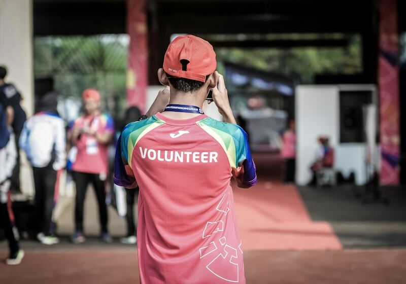
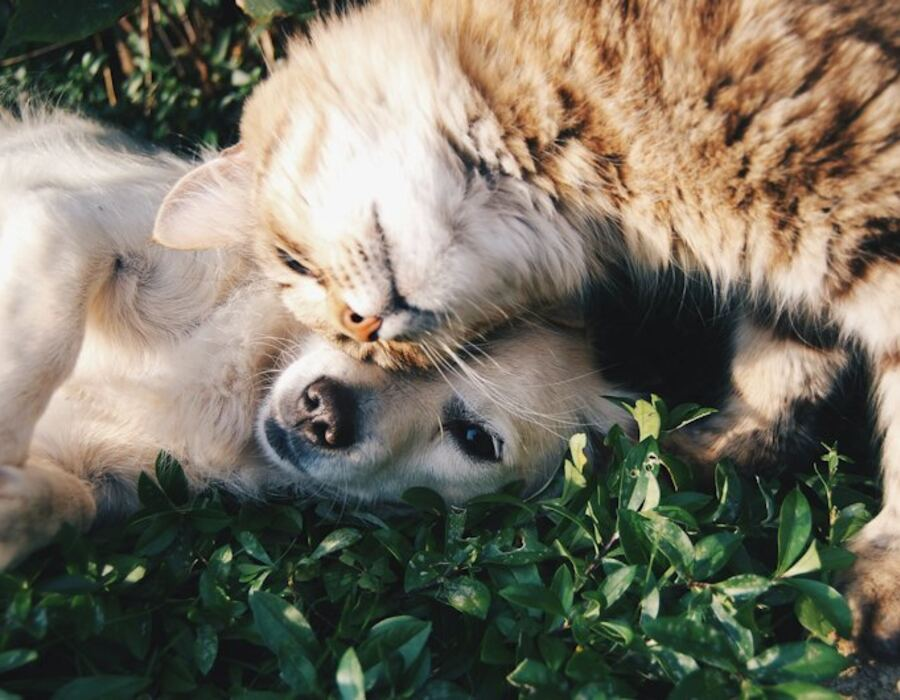
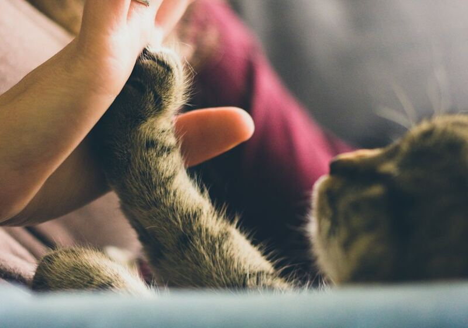
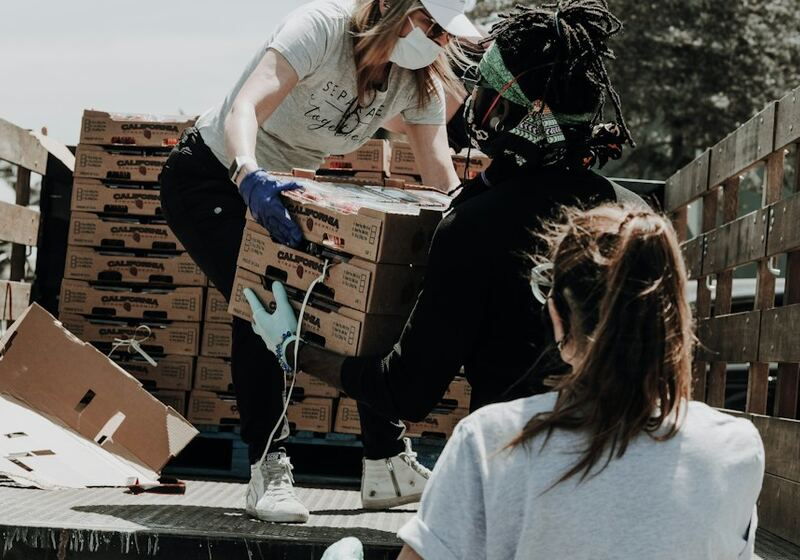
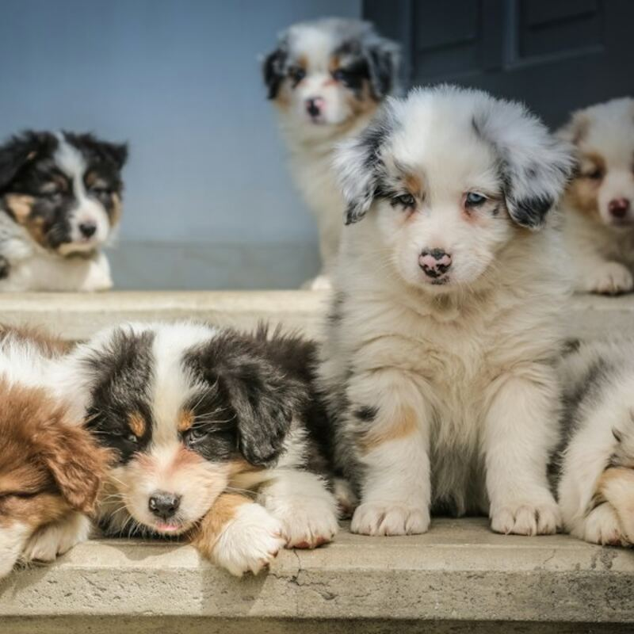
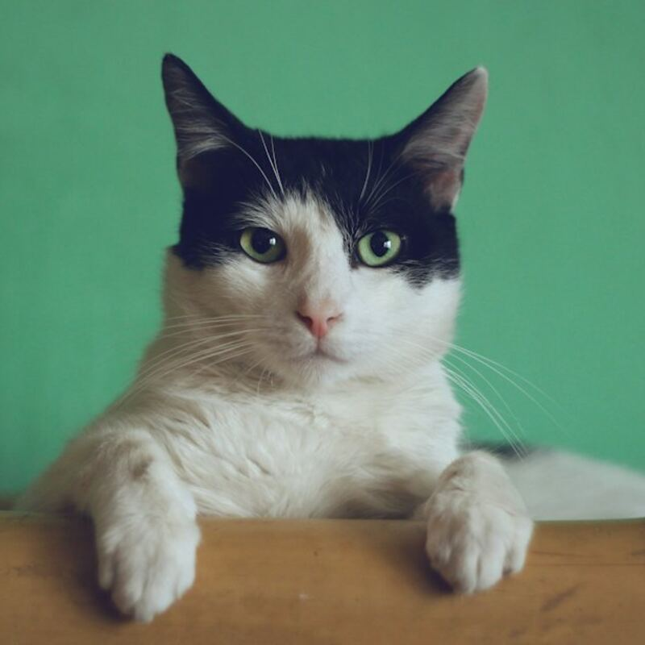
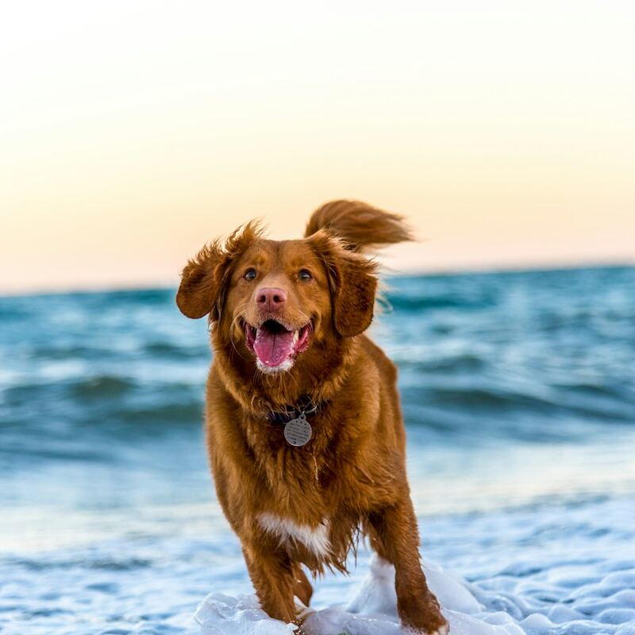
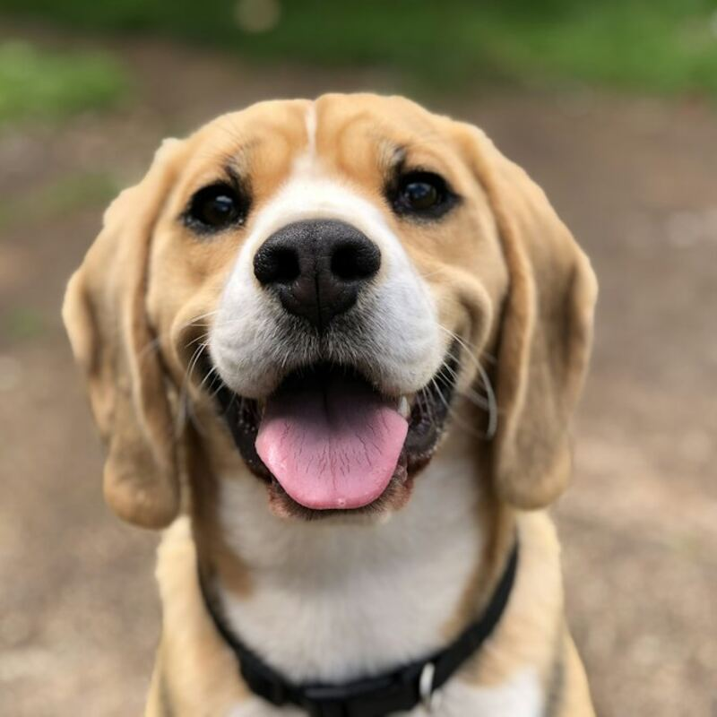
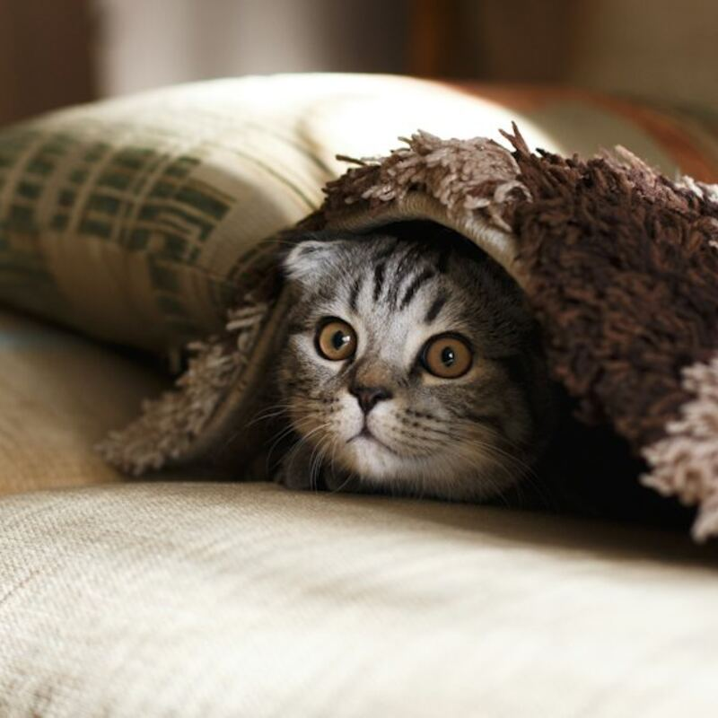
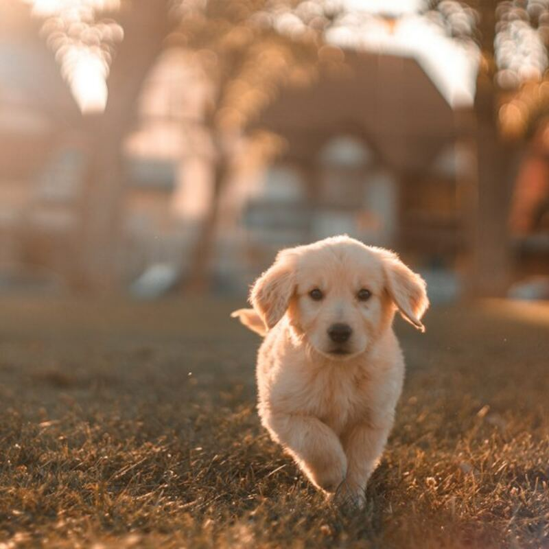

Resgate
Atendemos denúncias de animais abandonados ou feridos.
Resgatamos cães e gatos abandonados e ajudamos cada um a encontrar uma nova família.
Quero ajudar
A Patas Amigas começou em 2015 com um grupo de vizinhos que cuidava dos animais de rua do bairro. Hoje temos um abrigo com cerca de 80 animais e já fizemos mais de 1.500 adoções. Nossa causa é diminuir o abandono com resgate, castração e conscientização.
Marina Alves
Fundadora
Rafael Souza
Veterinário
Júlia Ramos
Adoções

Atendemos denúncias de animais abandonados ou feridos.

Castração gratuita para famílias de baixa renda.

Arrecadamos ração para comunidades carentes.






Chave: doe@patasamigas.org
Ração, cobertores e produtos de limpeza podem ser entregues no abrigo.
Ajude com passeios, banhos e feiras de adoção aos sábados.
Rua das Acácias, 120 – Cidade Fictícia
(00) 98765-4321
contato@patasamigas.org